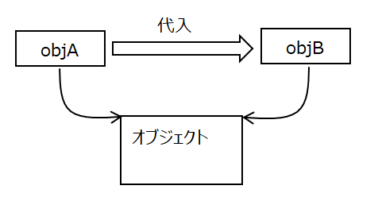
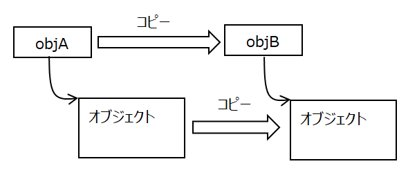
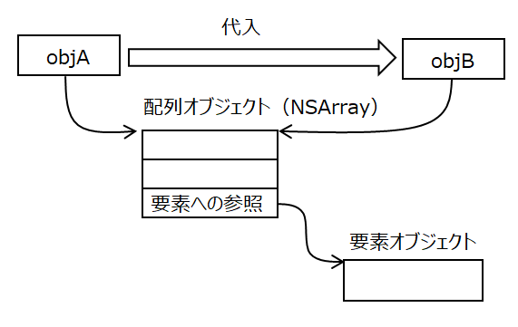
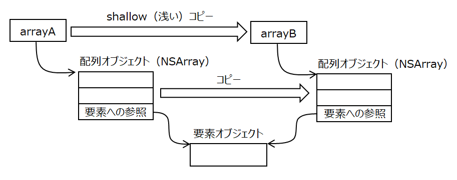
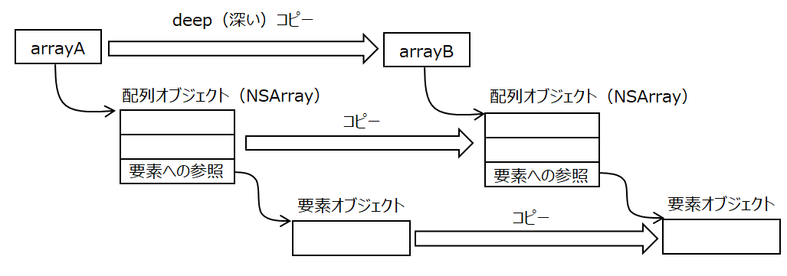

オブジェクトのコピー/配列のコピー
１-１. オブジェクトの代入
オブジェクト変数を別のオブジェクト変数に代入した場合、それぞれの変数が参照する先は同じオブジェクとなる。代入元が参照するオブジェクトの中身を変えると、代入先が参照するオブジェクトも変わる。

１-２. オブジェクトのコピー
オブジェクト変数を別のオブジェクト変数に copyメソッドでコピーした場合、コピー元からオブジェクトが複写され、コピー先の変数はこれを参照する。コピー元の変数からオブジェクトの中身の変えても、コピー先が参照するオブジェクトは変わらない。

２-１. 配列の代入
配列の場合、配列（NSArrayオブジェクト）が保持する要素オブジェクトの扱いがポイントとなる。
上記のオブジェクトの代入と同じように、配列オブジェクトを別の変数に代入した場合、代入先は同じ配列オブジェクトを参照する。

２-２. 配列の shallow（浅い）コピー
shallowコピーにより配列をコピーすると、コピー元の配列を複写した新しい配列オブジェクトが作成され、コピー先はこれを参照する。
要素の追加、削除はそれぞれの配列において別個に行われるが、要素はコピーされないので、既存の要素はそれぞれの配列が同じものを参照することになる。

２-３. 配列の deep（深い）コピー
配列の要素のコピーを行うためには、配列を引数としたイニシャライザ（initWithArray:copyItems:）を使用して、元の配列の要素をコピーした新しい配列を作成する。このとき引数copyItemsをYESにすること。これをdeepコピーという。（NOにすれば、shallowコピーと同じになる）

3. NSCopyingプロトコル
カスタムクラスのオブジェクトのcopyを実現するには、クラスがNSCopyingプロトコルの copyWithZoneメソッドを実装し、要素のコピー組み込んでいること。
（オブジェクトに対して copyメソッドを呼ぶと、クラスで定義した copyWithZoneメソッドが呼ばれることになる）
copyWithZoneメソッドの実装例を次に示す。
例１. 数値型の変数と基本クラスの変数を持つクラス
自身と同じクラスのオブジェクトを作成し、クラスの全ての要素をコピーし、戻り値として返す。数値型の変数は値の代入、基本クラスのオブジェクトは、copyメソッドによりコピーする。
例２：カスタムクラスのオブジェクトおよびその配列を持つクラス
カスタムクラスのオブジェクトはcopyメソッドによりコピーする。カスタムクラスはNSCopyingプロトコルに準拠し、copyWithZoneメソッドを実装しておくこと。実装していないと実行時エラーとなる。配列は initWithArray:copyItems:メソッッドにより配列要素のdeepコピーを行う。
クラスが階層的な構造になっているとき、下位のクラスに向かって段階的にコピー処理が呼ばれる。
４. システム標準クラスの代入とコピー
確認してみたらシステム標準クラスであるNSString型の変数とNSDate型の変数は、代入操作もコピー操作も、値のコピーとなった。おそらくこれらのクラスは同じ動作になると思われる。
５. 多次元配列のコピー
2次元以上の配列オブジェクトをdeepコピーをすると、直下の配列の要素はコピーされるが、それより深い配列の要素はコピーされない。行うとすれば下記の例のように、配列の次元に対応した多段階ループ中で、それぞれの次元の配列コピーを行う必要がある。
６. サンプルプログラム
オブジェクトのコピー/配列のコピーの確認
AppDelegateクラス
カスタムクラス
AClass
配列を持ったカスタムクラス
BClass